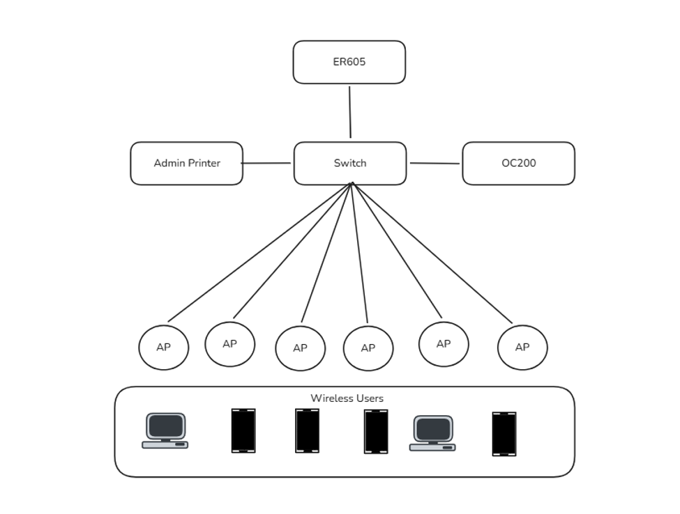
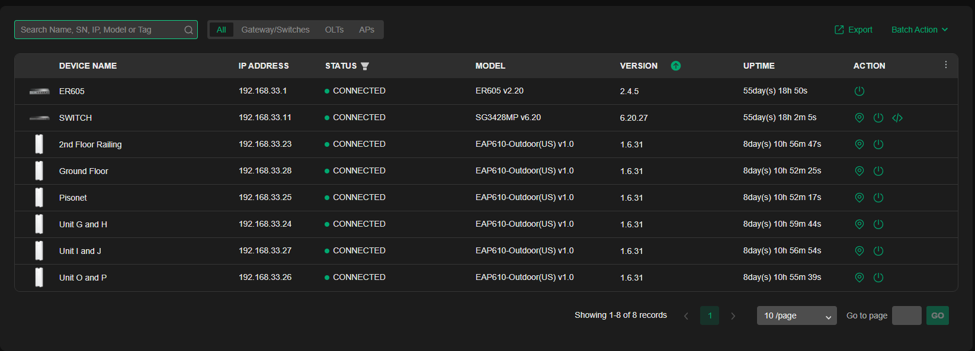
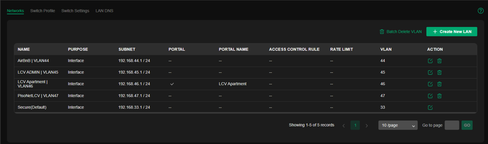

projects / omada-sdn
SOHO Network with TP-Link Omada SDN
Internet connectivity for clients on a software-defined network, with a router on a stick and a cloud-accessible controller for monitoring, troubleshooting and configuration.
Overview
- I helped implement this setup. Its purpose is to provide internet connectivity to our clients using software-defined networking (SDN).
- It is a small office/home office (SOHO) network where the router is the main gateway, a design known as router on a stick (ROAS).
- Everything is managed from a TP-Link OC200 network controller, which can be reached through the cloud for troubleshooting, monitoring and configuration.
Network topology
- The ER605 router is the gateway and connects to a single switch.
- The switch connects the OC200 controller, the admin printer, and six access points that serve the wireless users.

Devices
- Router: TP-Link ER605, the main gateway.
- Switch: TP-Link SG3428MP.
- Access points: six EAP610-Outdoor units, placed by area (2nd floor railing, ground floor, and the unit blocks).
- Controller: TP-Link OC200 running the Omada software, with every device adopted and shown as connected.

VLANs and segmentation
- Separate networks (VLANs) keep different groups of users apart, each with its own /24 subnet.
- One of the networks uses a captive portal for guest sign-in.
- The default LAN is kept for management and secure devices.

Management
- One place to monitor device status, firmware versions and uptime.
- Remote troubleshooting and configuration through the cloud, with no need to be on site.